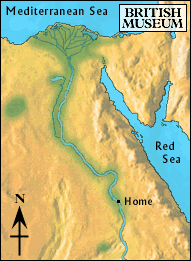

Home

The boy jumped into the other boat as it passed. He had searched all over the land and still had not found his brother. He was ready to go home. Soon it would be "shemu" (the harvest season), and there would be a lot of work to do harvesting the grain.
The gentle sound of the water hitting the side of the boat was like a lullaby and the boy fell asleep.